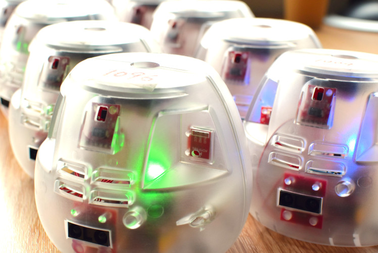
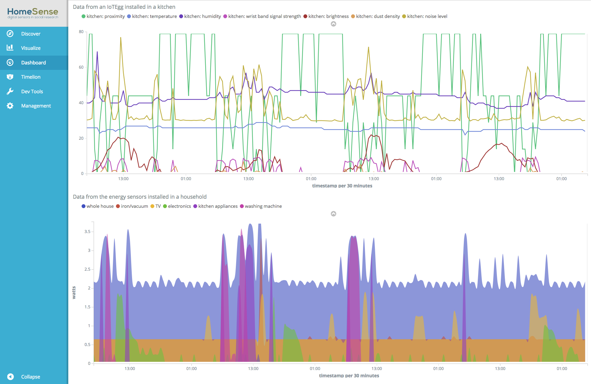
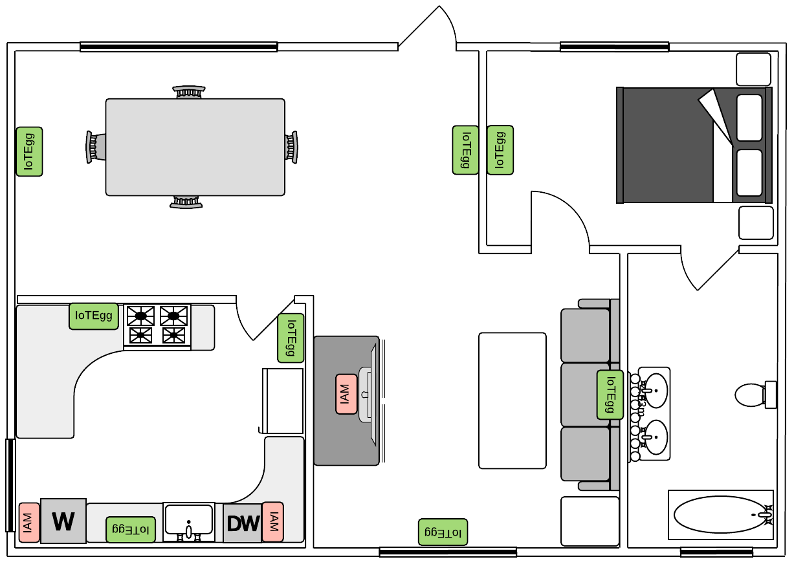
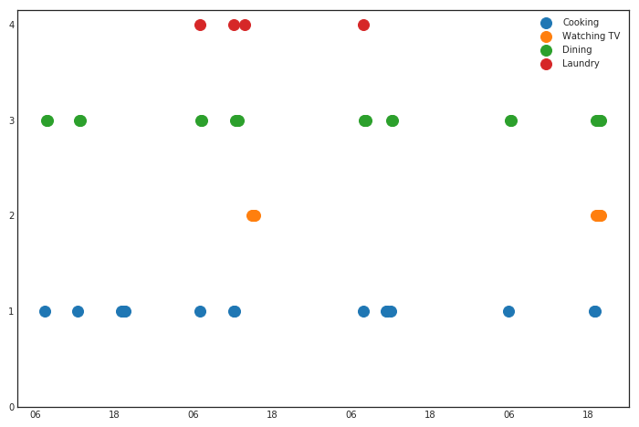
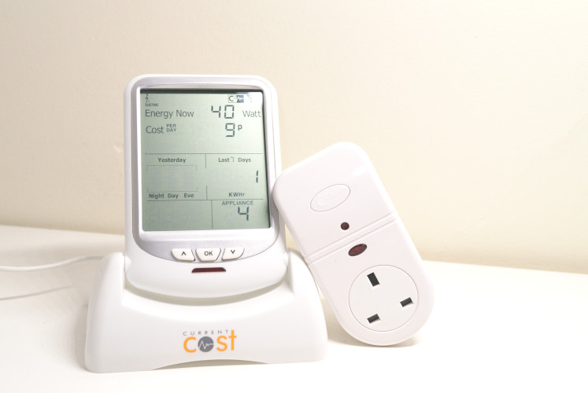
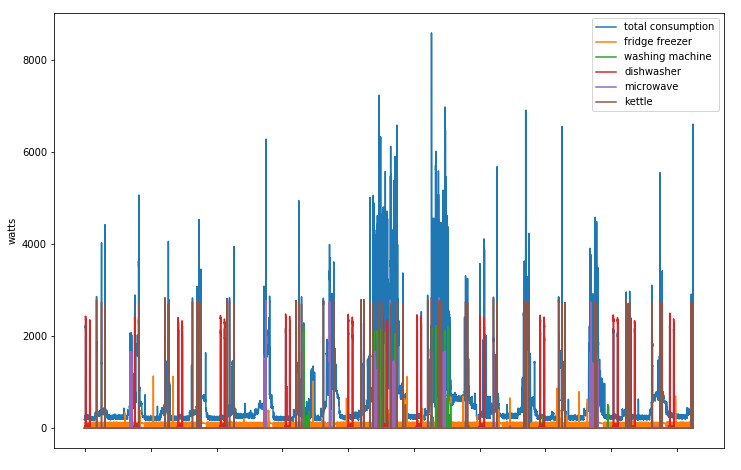

Projects
HomeSense
An IoT Platform For Sensing Indoor Activity
This project is a collaboration with 5GIC, aiming at developing a platform for using sensors to collect data about indoor environments and activities. We developed a suite of sensors based on Arch Pro™ and Raspberry Pi™ with a variety of commodity sensors that are capable of capturing temperature, humidity, sound, proximity, brightness, dust density, energy consumption. The suite of sensors was designed to ensure easy-setup, flexible deployment, data security, reliability and extensibility. The suite of sensors can be easily deployed to multiple locations to capture the entire home environment and the data will be sent to central servers via encrypted connections through WIFI and the Internet. We also developed a system for real-time data visualisation and analysis in order for social researchers to monitor the process of data collections and act upon any interruptions. The developed platform was tested and used for collecting data from 20 households and a multi-storey office building in the UK.
 
Sensor-based Home Activity Recognition
The advance of IoT devices can vastly improve home life and also provide a great opportunity for social researchers to study home activity in larger scales. In this project, we have been trying to identify home activities from sensory data via machine learning based methods. The sensory data was collected through the IoT platform developed in collaboration with 5GIC and the ground truth was collected via survey and time use diaries. We evaluated various machine learning methods for activity recognition tasks based on the heterogeneous data collected from real households.
 
Energy Disaggregation
Home activities (e.g., laundry, cooking) are mostly assisted by electrical appliances and can be characterised by the energy profiles of the appliances being used. The rapid development of deep learning methods provides powerful tools for modeling complex patterns. This project tries to use these tools to infer the electricity (energy) consumption of individual appliances from the mains reading at high frequencies.
 
Self-governing institutions
Large-scale self-organised systems, such as distributed community energy systems, have called for coordination approaches that are able to deal with issues such as heterogeneity, inter-dependence and dynamic variability. Holonic institutions have been proposed as an approach to converging the structuration required for multi-scale, multi-criteria optimisation in nested enterprises with the formal representation of institutionalised powers required for the minimal recognition of the rights to self-organise. In the project, we investigated different types of rule conflicts that may exist in holonic institutions and provided a formalisation of such rules by means of Event Calculus.
Multi-agent Reasoning In Regulated Environments
In this project, we researched on the design and implementation of an operational framework for modeling and verifying agent interactions in regulated environments via the concept of normative multi-agent systems and the operational semantics of Colored Petri Nets. From a system point of view, we investigated the problems of compliance checking and conflict detection. From an agent point of view, we investigated how agent preferences can be modeled and evaluated.